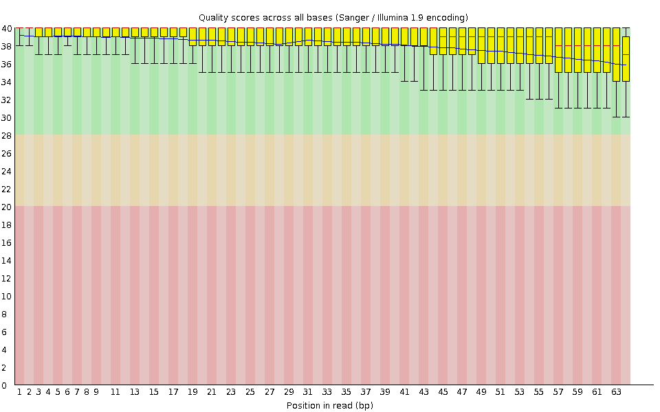
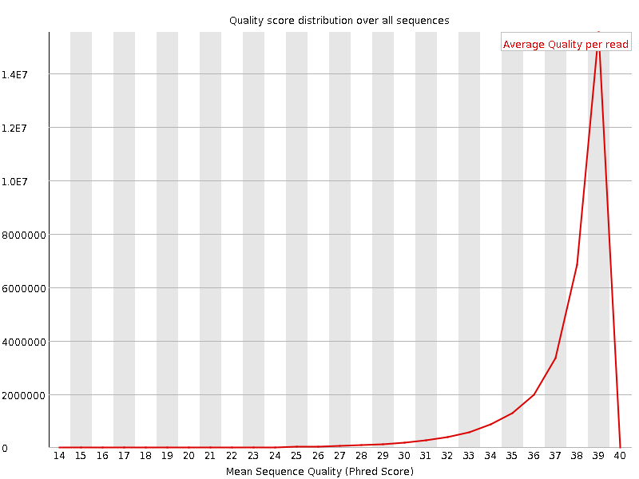
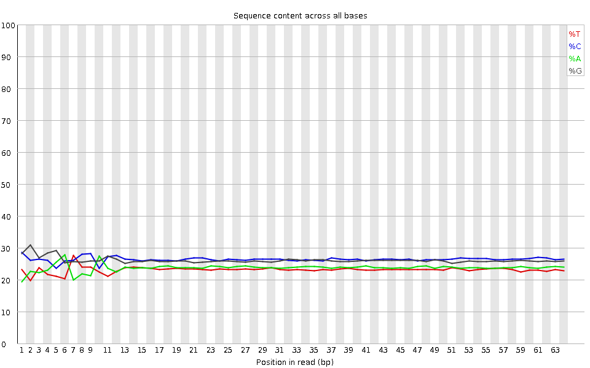
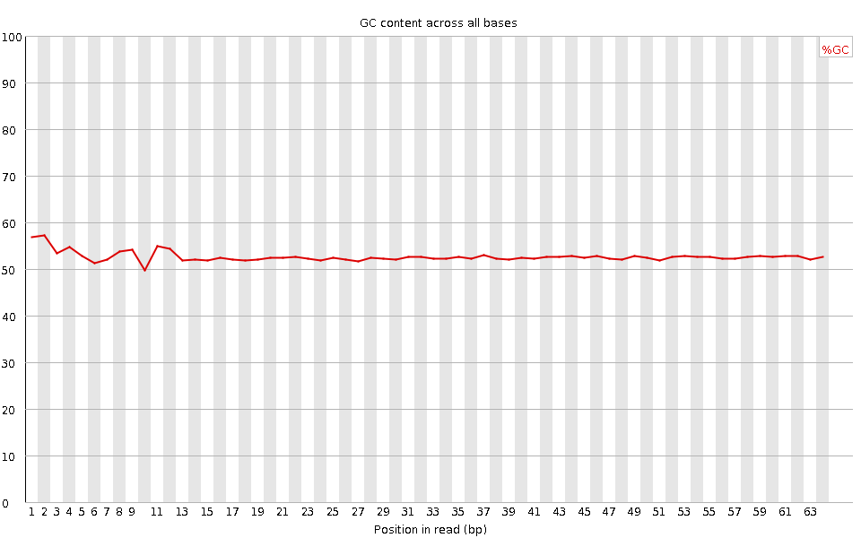
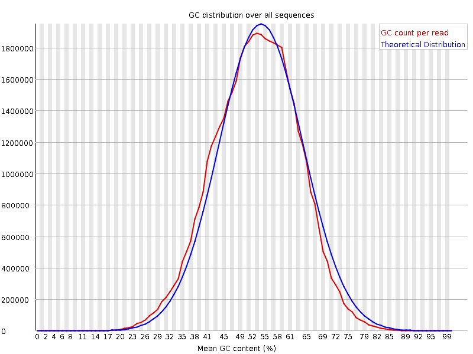
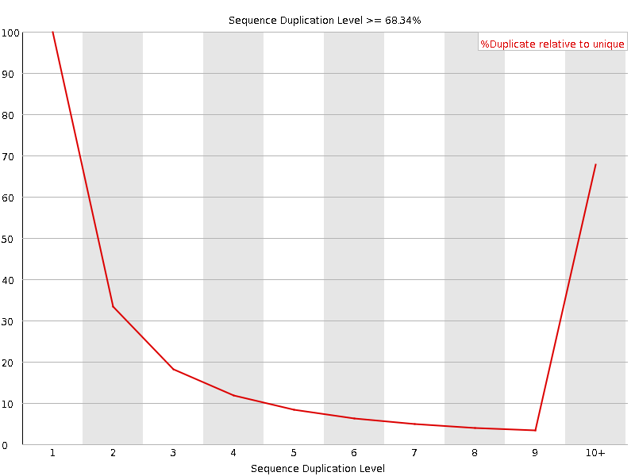
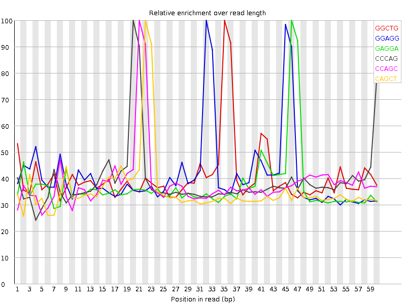

![[OK]](Icons/tick.png) Basic Statistics
Basic Statistics
| Measure | Value |
|---|---|
| Filename | SRR307900_pe_2.f.fastq |
| File type | Conventional base calls |
| Encoding | Sanger / Illumina 1.9 |
| Total Sequences | 31900150 |
| Filtered Sequences | 0 |
| Sequence length | 64 |
| %GC | 52 |
Per base sequence quality

Per sequence quality scores

![[WARN]](Icons/warning.png) Per base sequence content
Per base sequence content

Per base GC content

Per sequence GC content

Per base N content

Sequence Length Distribution

![[FAIL]](Icons/error.png) Sequence Duplication Levels
Sequence Duplication Levels

Overrepresented sequences
| Sequence | Count | Percentage | Possible Source |
|---|---|---|---|
| GGTGGCGCGTGCCTGTAGTCCCAGCTACTCGGGAGGCTGAGGTGGGAGGATCGCTTGAGCCCAG | 65831 | 0.2063658007877706 | No Hit |
| CGGTGGCGCGTGCCTGTAGTCCCAGCTACTCGGGAGGCTGAGGTGGGAGGATCGCTTGAGCCCA | 60335 | 0.18913704167535264 | No Hit |
| GGTGGCGCGTGCCTGTAGTCCCAGCTACTCGGGAGGCTGAGGCTGGAGGATCGCTTGAGTCCAG | 37361 | 0.11711857154276704 | No Hit |
| CGGTGGCGCGTGCCTGTAGTCCCAGCTACTCGGGAGGCTGAGGCTGGAGGATCGCTTGAGTCCA | 34675 | 0.1086985484394274 | No Hit |
Kmer Content

| Sequence | Count | Obs/Exp Overall | Obs/Exp Max | Max Obs/Exp Position |
|---|---|---|---|---|
| GGCTG | 4940505 | 2.3053868 | 5.69265 | 35 |
| GGAGG | 4949360 | 2.2761946 | 5.5051017 | 32 |
| GAGGA | 4247310 | 2.1462247 | 5.7745247 | 46 |
| CCCAG | 4823160 | 2.1448023 | 5.484339 | 20 |
| CCAGC | 4755495 | 2.1147125 | 5.514089 | 21 |
| CAGCT | 4093595 | 2.075439 | 5.816417 | 22 |
| GCTGA | 3964615 | 2.0327053 | 5.8662953 | 36 |
| CTGAG | 3926805 | 2.0133197 | 5.6931014 | 37 |
| GCCTG | 4270000 | 1.9702988 | 5.4874434 | 11 |
| GGTGG | 4086500 | 1.928378 | 5.264168 | 1 |
| TGCCT | 3525960 | 1.8342681 | 5.806414 | 10 |
| AGGCT | 3557645 | 1.8240469 | 5.702176 | 34 |
| GAGGC | 3873115 | 1.7613777 | 5.473479 | 33 |
| TGAGG | 3239160 | 1.6794766 | 5.6063952 | 38 |
| CCTGT | 3165395 | 1.6466961 | 5.6397376 | 12 |
| GTGGC | 3421965 | 1.5967904 | 5.6344132 | 2 |
| TCCCA | 3027740 | 1.5179429 | 5.5137944 | 19 |
| AGGAT | 2492315 | 1.4198598 | 5.572473 | 47 |
| TTGAG | 2183590 | 1.2764212 | 5.6009984 | 55 |
| CTACT | 2071200 | 1.1838821 | 5.4096074 | 25 |
| CTTGA | 2044030 | 1.1815223 | 5.4747486 | 54 |
| GCTTG | 2169915 | 1.141554 | 5.017247 | 53 |
| CTGTA | 1951735 | 1.1281724 | 5.5115123 | 13 |
| AGCTA | 1664435 | 0.93765086 | 5.1961794 | 23 |
| TACTC | 1493185 | 0.8534932 | 5.146389 | 26 |
| TGTAG | 1419010 | 0.8294846 | 5.1727557 | 14 |